Interests
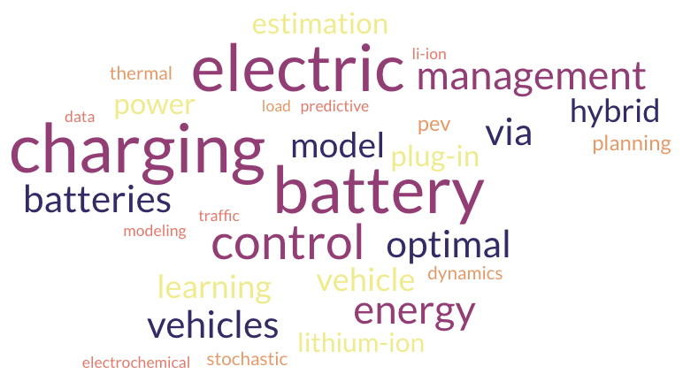
Across the world, communities are rapidly urbanizing. These growing cities are characterized by a tightly woven infrastructure where mobility and energy networks are diversifying and merging. For example, electrified transportation creates unique mobility options and constraints while simultaneously imposing new energy demands and storage opportunities. Maximizing the efficiency of such interconnected systems requires strong fundamental science for modeling, estimation, and control, contextualized within energy and mobility applications.
Battery Modeling and Algorithms
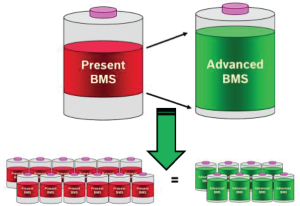
Today's electric vehicle batteries are expensive and prone to unexpected failure. Batteries are complex systems, and developing techniques to cost-effectively monitor and manage important performance measures while predicting battery cell degradation and failure remains a key technological challenge. There is a critical need for breakthrough technologies that can be practically deployed for superior management of both electric vehicle batteries and renewable energy storage systems.
We are developing battery monitoring and control software to improve the capacity, safety, and charge rate of electric vehicle batteries. Conventional methods for preventing premature aging and failures in electric vehicle batteries involve expensive and heavy overdesign of the battery and tend to result in inefficient use of available battery capacity. The objective is to increase usable capacity and enhance charging rates by improving the ability to estimate battery health in real-time, to predict and manage the impact of charge and discharge cycles on battery health, and to minimize battery degradation.
We are developing battery monitoring and control software to improve the capacity, safety, and charge rate of electric vehicle batteries. Conventional methods for preventing premature aging and failures in electric vehicle batteries involve expensive and heavy overdesign of the battery and tend to result in inefficient use of available battery capacity. The objective is to increase usable capacity and enhance charging rates by improving the ability to estimate battery health in real-time, to predict and manage the impact of charge and discharge cycles on battery health, and to minimize battery degradation.
Automated, Connected, and Electrified Vehicles
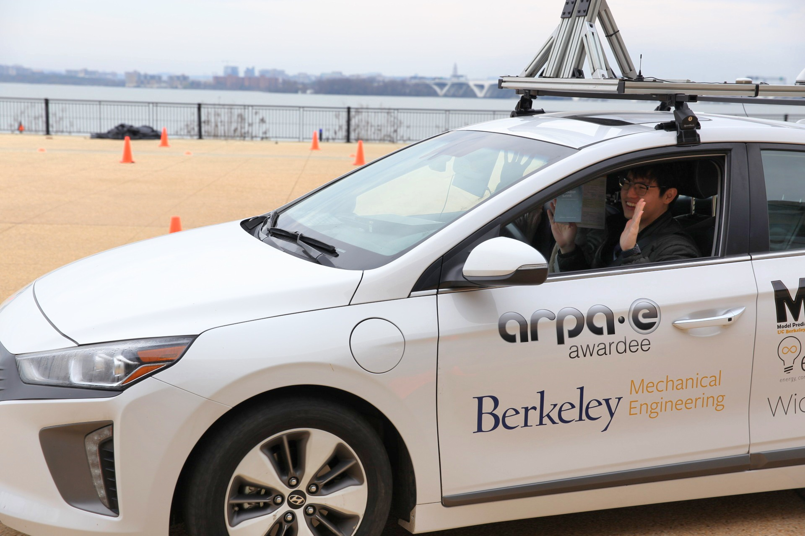
Our research focuses on reducing vehicle energy consumption through advanced automation and connectivity technologies. We develop algorithms that leverage real-time traffic data, vehicle-to-vehicle communication, and predictive control to optimize vehicle operation. This includes eco-driving strategies that anticipate traffic conditions, intelligent speed adaptation, and coordinated platooning of connected vehicles. By combining automation with connectivity, we can achieve significant improvements in energy efficiency while maintaining or enhancing mobility performance. Our work spans from theoretical algorithm development to practical implementation and testing on real vehicles.
Power and Transportation Infrastructure
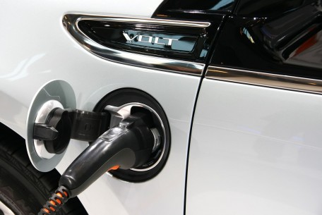
Our research explores the intersection of electric power and transportation systems, with a focus on vehicle electrification. We develop algorithms and frameworks for operating power grids with high penetration of electric vehicles, considering both their energy demands and potential grid services. This includes optimizing charging infrastructure placement, managing grid constraints during mass charging events, and leveraging vehicle-to-grid capabilities for grid stability. Our work combines power systems engineering with transportation planning to create resilient and efficient infrastructure that supports the transition to electric mobility.
Facilities
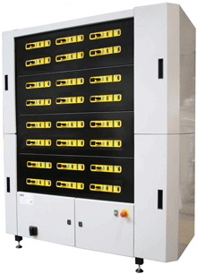
PEC Corp SBT2050 Battery Cell/Module R&D Test System
- 12 channels (expandable to 24 channels)
- 50A, 20V per channel
- CAN communication for hardware-in-the-loop testing
- 4 automatic current switched channels
- Temperature sensor inputs
- ±0.03% FSD measurement accuracy
- Liquid cooled electronics
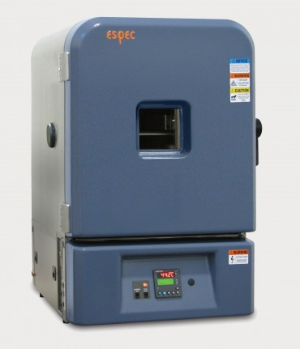
ESPEC BTL-433 4 cu. ft. Benchtop Temperature/Humidity Chamber
- Temperature Range: -20°C to +180°C
- Temperature Cycling Rate: 1.5°C/min heat and 1.2°C/min cool
- Humidty Range: 10 to 95% RH
- Interior Dimensions: 19.6" x 15" x 23.6" (W x D x H)
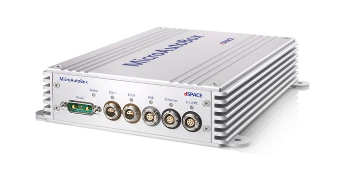
dSPACE MicroAutoBox II 1511
- DS1401 PowerPC 750GL 900MHz processor board
- Ethernet I/O interface
- Two dual CAN interfaces; 4 CAN channels in total
- Analog Input: 16 16-bit channels
- Analog Output: 4 12-bit channels
- Digital I/O: 40 inputs, 40 outputs
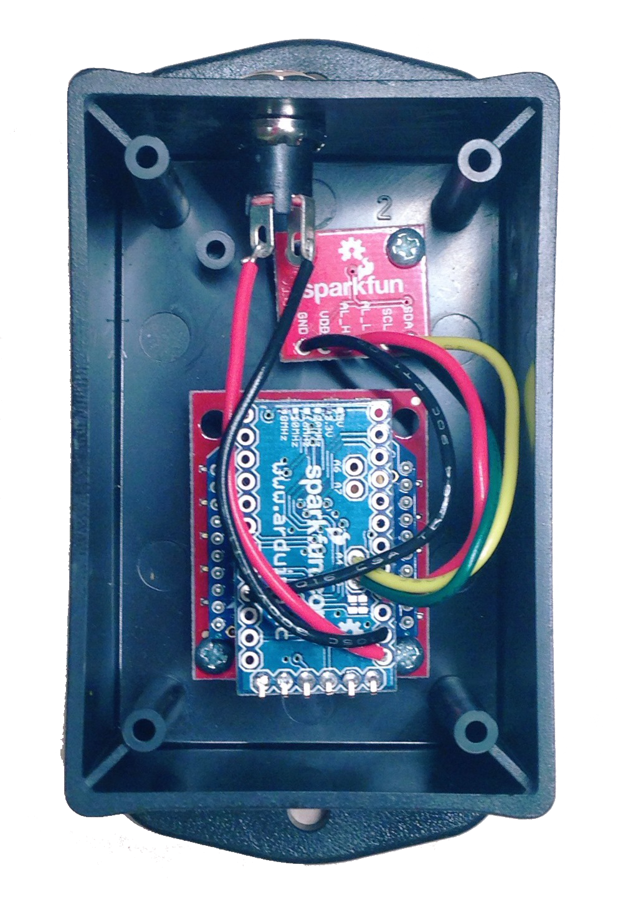
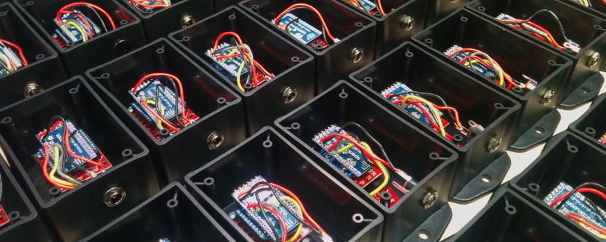
Temperature/Humidity Wireless Sensor Network
- ~70 nodes
- Building enviromental monitoring
- ZigBee communication protocol
- Honeywell HIH6130 sensors
- Powerwed by Arduino Pro Mini
- BeagleBone Black Gateway
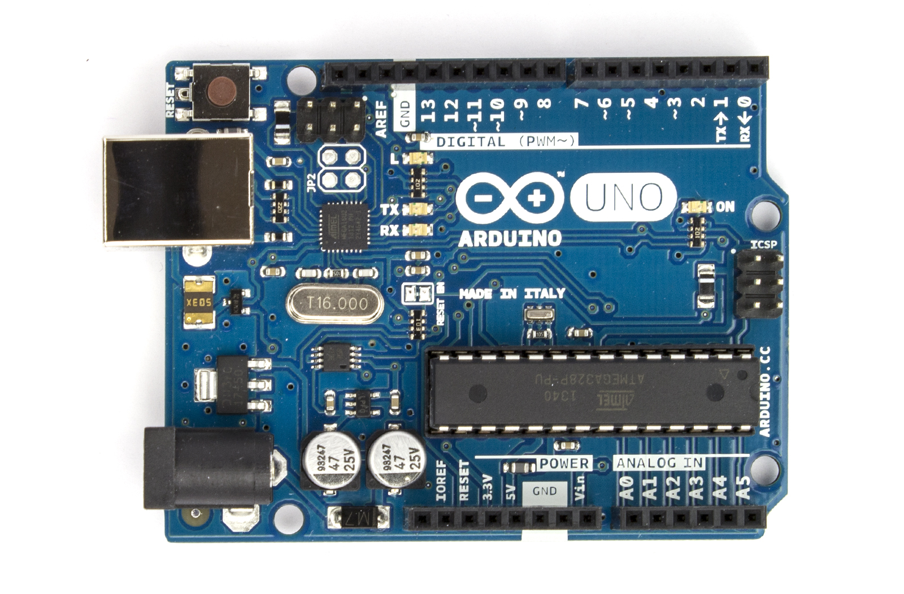
Open Source Hardware, and lots of it!
- Arduinos, Rasperry Pis, and BeagleBone Blacks, oh my!
- Soldering equipment
- Sensors galore
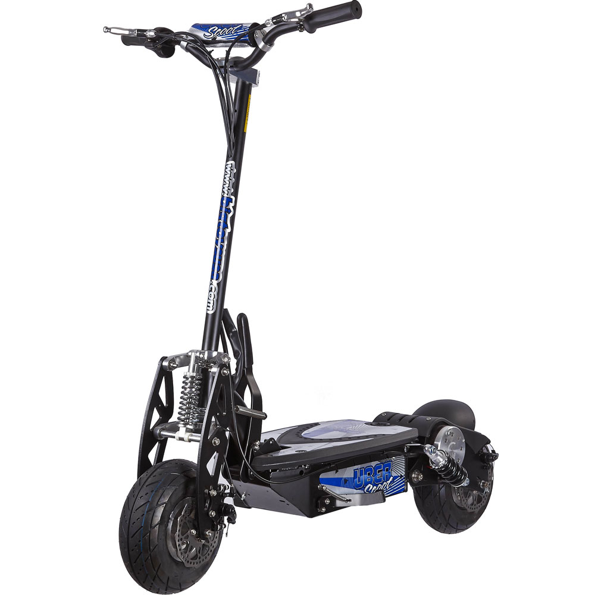
Electric Scooters
- UberScoot 1000W, three 12V,12Ah Lead-Acid Cells
- Razor 300S, two 12V,12Ah Lead-Acid Cells